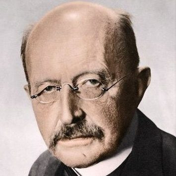
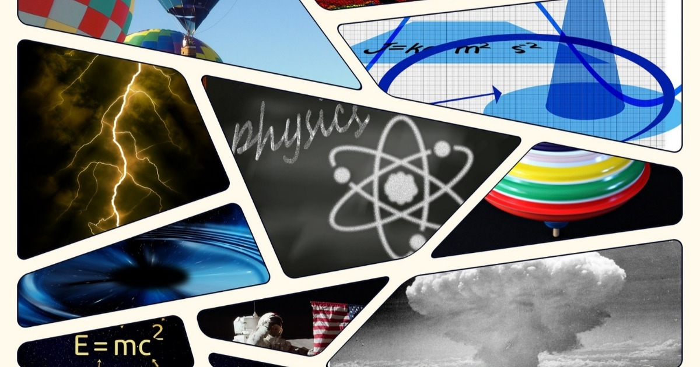
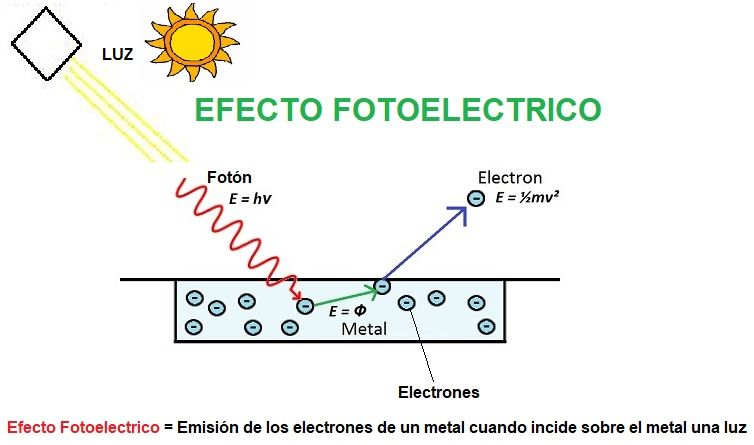

Para comenzar tendremos que decir , ¿Como comenzó?
Desarrollo
Werner Heisenberg recordaba sus largas discusiones con Niels Bohr que se prolongaban hasta
altas horas de la
noche. En su libro de 1958 Physics and Philosophy: The Revolution in Modern Science, el
físico contaba que tras aquellos debates
solía pasear por un parque cercano sin dejar de repetirse: “¿Puede realmente la naturaleza
ser tan absurda…?”. Desde que el 14
de diciembre de 1900 Max Planck fundara la teoría cuántica, los científicos recelaron
perplejos ante sus propios hallazgos: nada
de aquello parecía tener sentido. Nada era intuitivo o razonable. Tanto fue así que más de
medio siglo después Richard Feynman
pronunciaba una de las más famosas frases al respecto: “Creo que puedo decir con seguridad
que nadie entiende la mecánica cuántica”.
“Simplemente relájense y disfruten”, aconsejaba a los asistentes a aquella conferencia en la
Universidad de Cornell en 1964.
Motivación
Le atreví a habalr de unas de las areas más dificiles de la ciencia, de manera de que las
personas que llegen a leer este blog
aprendan un poco de lo que trata esta ciencia, de forma facil y resumida, y lo hago más que
nada por que me gusta mucho la ciencia y me gustaria
aprender más sobre esta.

Podemos observar una foto del científico Max Planck
Las
diversas ramas de la Física
12/11/2021
La historia de la física es larga y convulsa, siendo de hecho una de las primeras ciencias en
surgir. Se pueden distinguir una
gran cantidad de periodos, destacando tres grandes conglomerados; la física clásica, la
física
moderna y la física contemporánea .
A continuación presentamos
brevemente algunas de las
principales
ramas de la física.
Mecánica
Termodinámica
Óptica
Acústica
Electromagnetismo
Mecánica de fluidos
Mecánica cuántica
Física nuclear
Astrofísica
Biofísica

Imagen que resume las ramas importantes en la física.
Aquí hay una lista de sitios de donde procederemos a englobar la investigación, por lo que si
quieres ver más a fondo puedes consultarlas.
Imagen de un pizarrón con varias formulas.
Video
Informativo
28/11/2021
Autor - QuantumFracture. El video se publicó el 18 de mayop de 2017
En 1927, Heinsenberg demostró que algunos pares de cantidades
físicas, como la velocidad y la posición, son imposibles de registrar simultáneamente sin
cometer errores. La precisión puede afectar a una de las dos medidas, pero no a ambas,
porque un fenómeno como la velocidad provoca consecuencias en la otra e invalida la medida.
Este video es probablemnte una fuente de información muy clara para uno de los principios
más importantes para entender la Fisica Cuantica, como en el video se explica, no se pueden
tener con su totalidad las medidas de algunas partícula, nosotros podriamos saber de donde
viene la particula, pero no sabriamos donde cae o a que velocidad avanza, esto es un
fenomeno extraño, que además de cancelar otra característica física de alguna partícula, la
física cuántica también demuestra un cambio en el resultado.
Investigación
17/05/22
Biografía de Max Planck
En la historia del mundo, la gente siempre quiere saber qué excede nuestros límites; Esta
curiosidad continua ha hecho grandes descubrimientos que cambian la historia de la
humanidad. Nuestro estilo de vida actual no es el mismo durante mil años. En muchos casos,
los descubrimientos en varios campos de la ciencia fueron beneficiosos para las personas,
pero en muchos otros casos fueron dañinos, y la historia lo ha demostrado (guerra, armas,
bombas atómicas).
Max Planck fue un gran científico, cuyas teorías y mente brillante cambiaron la forma en que
se evaluaba el universo, dirigiendo su trabajo más hacia la física y cómo explicar el
comportamiento de las cosas. El cuerpo más pequeño del universo, por su conocimiento de la
ciencia. teoría.
Técnicamente, en la familia de Max, la mayoría de ellos tienen educación universitaria, por
lo que el objetivo principal de sus padres es que su hijo y ellos vayan a la universidad y
obtengan un título universitario. Pasó parte de su infancia en Kiel, donde creció en paz
con sus padres y hermanos; No es el mejor hub, pero tampoco es el más silencioso. Desde
temprana edad mostró cierto interés por la ciencia, aunque no estaba del todo orientado
hacia la física.
A la edad de seis años, sus padres decidieron mudarse a Munich, donde lo inscribieron en el
Maximiliansgymnasium, donde la mayoría de sus compañeros de clase eran hijos de familias
prominentes e influyentes de todo Munich. Entre sus poderosas familias estaba Oscar Miller,
quien después de muchos años fundó el Deutsches Museum, un museo de ciencia y tecnología en
Munich, Alemania, que también se considera el más grande del mundo.
Max demostró un gran interés en la ciencia, el arte y la música en la escuela y la
universidad, y sobresalió en todas estas áreas. Sin embargo, ser lo suficientemente bueno en
estas áreas se convertirá en un problema en el futuro, porque eventualmente cuando termine
la escuela secundaria, él es muy bueno en estas áreas y también le apasionan todos los
campos. Allí, no podía decidir a qué universidad ir. Estas dudas lo llevaron a consultar a
su gran profesor, Philip von Joly, un gran físico experimental cuya principal área de
investigación era la ósmosis. La profesora Jolie no convence a Max de su respuesta, al
contrario, si Max decide estudiar física, lo apoyará, pues el joven tiene talento. El
propósito de la consulta de Planck con su mentor, Philip von Jolly, fue aclarar su decisión.
Max se unió al Departamento de Física de la Universidad de Munich en el año académico
1874/1875. Como se mencionó anteriormente, Jolie siempre apoyó las decisiones de Max, así
que mientras estaba en la universidad, Jolie se convirtió en la maestra de Max, quien lo
ayudó en muchas pruebas. En 1877 se trasladó a Berlín, donde impartiría clases durante el
curso académico 1877/1878 en la Universidad Friedrich Wilhelms. Allí también estudiaron los
grandes físicos de la época, como Hermann von Helmholtz, también físico y médico, y Gustav
Kirchhoff, también gran físico alemán. Aunque Helmholtz es un gran físico y maestro, Max
considera que sus lecciones son aburridas y sin preparación, a menudo improvisadas, lo que
hace que muchos estudiantes abandonen la clase, excepto tres: Max Planck, Rudolf
Lehmann-Wilhes y Kirchhoff.
Además de la perspectiva que tenía Max en los cursos de Helmholtz, se hicieron grandes
amigos, y Helmholtz contribuyó mucho al desarrollo científico de Max, quien con sus cursos
estudió la de Rudolf Clausius, uno de los fundadores de la termodinámica. .
Max Planck admiraba el trabajo de Rudolf por su simplicidad para explicar teorías complejas.
Fue tanta su admiración que basó su tesis doctoral en termodinámica, que presentó en 1879 en
Munich, titulada: "Sobre la segunda ley de la termodinámica".
Además de la perspectiva que tenía Max sobre los ciclos de Helmholtz, se hicieron buenos
amigos, y Helmholtz contribuyó en gran medida al desarrollo científico de Max, quien
aprendió con sus ciclos de Rudolf Clausius, uno de los fundadores de la termodinámica. . Max
Planck admiraba el trabajo de Rudolph por su simplicidad para explicar teorías complejas.
Fue tanta su admiración que basó su tesis doctoral en termodinámica, que presentó en 1879 en
Munich, titulada: "Sobre la segunda ley de la termodinámica". Regresó a Múnich tras defender
su tesis doctoral en 1880, donde trabajó como profesor de física en la universidad hasta
1889, tras lo cual regresó a Berlín, donde desde 1892 había sido director del Departamento
de Física Teórica.
La teoría de la relatividad
La teoría de la relatividad incluye tanto la relatividad especial como la relatividad
general, presentada principalmente por Albert Einstein a principios del siglo XX, y que
buscaba resolver la actual incompatibilidad entre la mecánica newtoniana y el
electromagnetismo.
La relatividad especial, publicada en 1905, trata de la física del movimiento de los cuerpos
en ausencia de gravedad, donde las ecuaciones electromagnéticas de Maxwell son consistentes
con las leyes del movimiento reconfiguradas. En relatividad especial, Einstein, Lorentz y
Minkowski, entre otros, unieron los conceptos de espacio y tiempo en una rama
tetradimensional llamada espaciotiempo. La relatividad especial fue una teoría
revolucionaria para su época en la que se abandonó el tiempo absoluto de Newton y se
introdujeron conceptos como la constancia de la velocidad de la luz, la dilatación del
tiempo, la contracción de la longitud y la equivalencia entre masa y energía. Además, con
fórmulas de relatividad finita, las leyes de la física son constantes en todos los marcos de
referencia inerciales; Como corolario matemático, se tomó como límite superior la velocidad
de la luz, y se ignoró la causalidad específica que tenía para la física hasta entonces.
Cabe señalar que las leyes del movimiento de Newton son un caso especial de esta teoría
donde la masa, moviéndose a velocidades muy bajas, no sufre ningún cambio de longitud ni se
convierte en energía, y la cantidad y el tiempo pueden considerarse absolutos.
ELa relatividad general, publicada en 1915, es la teoría de la gravedad que reemplazó a la
gravedad newtoniana, aunque es numéricamente idéntica a ella en campos gravitatorios débiles
y velocidades "pequeñas". La teoría general se reduce a una teoría especial de la existencia
de un campo gravitatorio. La relatividad general estudia la interacción gravitatoria como
una distorsión de la geometría del espacio-tiempo. En esta teoría, se introduce el concepto
de curvatura del espacio-tiempo como causa de las interacciones gravitatorias, y el
principio de equivalencia establece que para todos los observadores locales inerciales, las
leyes de la relatividad especial son constantes y el movimiento de las partículas se
presenta mediante líneas geodésicas. La relatividad general no es la única teoría que
describe la gravedad, pero es la teoría que ha encontrado los mejores datos comprobables.
Anteriormente se describía matemáticamente la interacción gravitacional mediante la
distribución de masa, pero en esta teoría no solo la masa percibe esta interacción, sino
también la energía, a través de la curvatura del espacio-tiempo, por lo que se necesita otro
lenguaje matemático para poder para describir eso, cálculo tensorial Cálculo. Esta fórmula
predice muchos fenómenos, como la desviación gravitacional de la luz y la excentricidad de
la órbita de Mercurio. La relatividad general también abre otro campo de estudio en física,
conocido como cosmología y ampliamente utilizado en astrofísica.
Fenómenos
En los últimos años del s. El siglo XIX y principios del XX estudió la interacción entre
materia y
las ondas electromagnéticas han llevado a la formulación de importantes problemas cuyas
soluciones han llevado a una
un nuevo concepto de la física que controla el comportamiento de los átomos: la física
cuántica. Comparte tres fenómenos que brindan pistas sobre la formación de la física
cuántica
Absorción y/o emisión de ondas electromagnéticas por parte de los átomos que componen la
sustancia:
Análisis del espectro de emisión de un cuerpo negro.
El término "cuerpo negro" se usa en física.
El nombre del remitente perfecto. Eso es todo,
Sustancia capaz de absorción y emisión.
energía de todas las frecuencias. En la actualidad, los materiales son muchos
Una aproximación del generador ideal hecha en
2008 y construido a partir de nanotubos
del carbono absorbe (y por lo tanto puede
emitida) el 99,955% de la energía que recibe.
Análisis de espectro de energía
emitido por el cuerpo negro
Notable diferencia con cualquier modelo.
Los teóricos de la física clásica finalmente predijeron
del siglo XIX.
Interpretación del efecto fotoeléctrico.
El efecto fotoeléctrico fue detectado por
en 1887 el caso Hertz incluyó
los electrones de ciertos metales cuando
iluminado por luz (generalmente ultravioleta). Interpretación de la denominada emisión de
tampoco puedo explicar la optoelectrónica.
Verdadero si se utiliza la teoría disponible en ese tiempo.
Explicación de los espectros de emisión de los gases.
Cuando el gas se expone a alto voltaje,
la luz se emite después de ser analizada usando
espectrómetro lindo especial
se compone de líneas de diferentes colores.
sobre un fondo negro. Modelo único
luego está el átomo (átomo
Rutherford) que el espectro será
continuo y sin zonas oscuras.

Representación gráfica del Efecto fotoeléctrico
Meme
17/05/22
Meme que demuestra la complejidad del campo de Física Cuántica
 El
inicio
El
inicio Lista
de páginas de divulgación científica
Lista
de páginas de divulgación científica
 Investigación
Investigación
.png) Meme
Meme